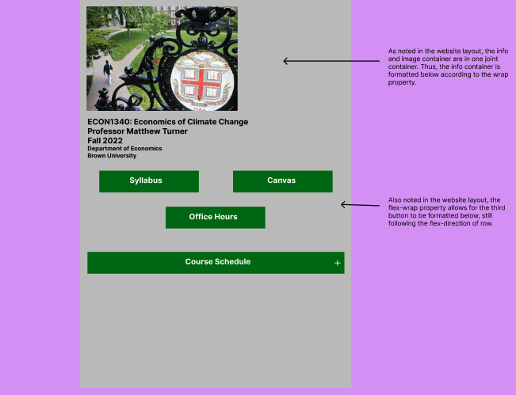
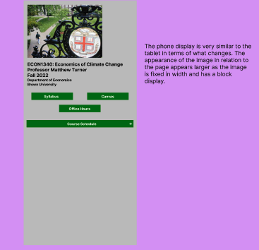
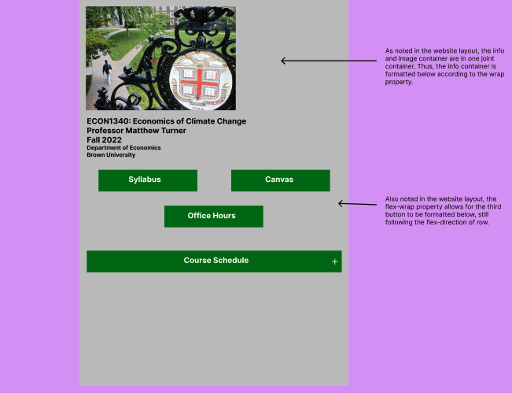
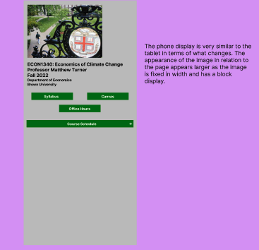

Responsive Redesign
Part 1: Identifying Usability Problems
The selected website was a public course website for ECON1340: Economics of Climate Change
I wanted to redesign the site to increase its efficiency, design, and ease of navigation. The website can be found here!

Problems with Current Website Design
- Simplistic design with minimal additions
- Basic color selection; no contrast in aesthetics
- Bias in design to left side of website with large white space in upper right area
- Conceptually confusing as homework and readings placed on website, but submission and grades on Canvas
- "Announcements" section is empty; inefficient design; also unnecessary given use of Canvas for announcments
- "Course description and requirements" link is the syllabus
- The text size in the table changes based on display dimensions
Accessibility Findings
WebAIM WAVE detected a multitude of issues with the website. Some of the issues such as contrast of certain texts, unnecessary lists, and placement of texts within the table should be improved. However, WAVE also detected many of the readings were linked to PDFs and noted linking issues. While the points made were reasonable (such as PDFs often having accessibility issues), I do not necessarily agree that there is an immediate need to improve PDF accessibility as it aligns with many of the school’s courses.
Part 2: Visual Redesign
Low-fidelity Wireframes
To begin the visual redesign process, I sketched some low-fidelity wireframes. The below show the adjustments in layout and design along with some annotations. Some major changes made were converting the header sections into buttons and a dropdown button that displays the course schedule when clicked.


Visual Design Style Guide
Following the sketching of my low-fi wireframes, I developed a visual design style guide to ensure my high-fi wireframes were consistent.
High-fidelity Wireframes
Lastly, I used Figma to develop some high-fidelity wireframes. The properties across the three displays are the same with identical structures.

 


